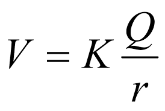
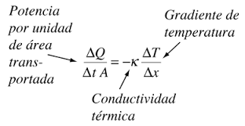

Fisica.
Campo Electromagnetico
Un campo electromagnético (CEM) es el campo de fuerza creado en torno a una corriente eléctrica. Las cargas que se mueven de forma no uniforme, es decir, con corriente alterna (como la que transporta las líneas eléctricas, el cableado y los electrodomésticos) generan campos electromagnéticos variables.
Fórmula

Potencial Eléctrico
Potencial eléctrico, también conocido como "voltaje", mide la energía potencial eléctrica por carga de la unidad. Campo eléctrico es una cantidad escalar y es fundamental para muchos efectos eléctricos. Como energía potencial, lo que es físicamente significativa es la diferencia de potencial eléctrico. Por ejemplo, la variación espacial en el potencial eléctrico está relacionado con el campo eléctrico, que da lugar a la fuerza eléctrica sobre una carga. La diferencia de potencial eléctrico entre dos puntos de una resistencia conduce la corriente eléctrica. Este experimento utiliza un voltímetro y un tubo fluorescente para demostrar el potencial eléctrico (más exactamente, la diferencia de potencial entre dos puntos en el espacio) generado por una esfera cargada. El experimento demostrará el concepto de superficies equipotenciales, que son perpendiculares a los campos eléctricos.

Conductividad.
Conductividad es la propiedad de aquello que es conductivo (es decir, que tiene la facultad de conducir). Se trata de una propiedad física que disponen aquellos objetos capaces de transmitir la electricidad o el calor. La conductividad eléctrica, por lo tanto, es la capacidad de los cuerpos que permiten el paso de la corriente a través de sí mismos. Esta propiedad natural está vinculada a la facilidad con la que los electrones pueden atravesarlos y resulta inversa a la resistividad. Es importante diferenciar entre la conductividad y la conductancia (la aptitud de un cuerpo para conducir la corriente entre distintos puntos). La conductancia es la propiedad de la resistencia.
